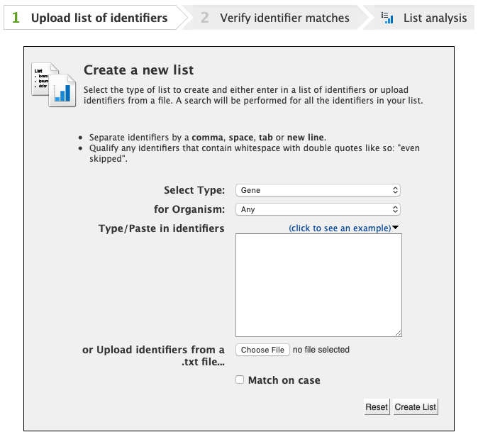
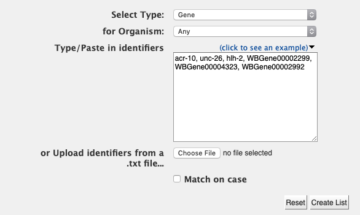
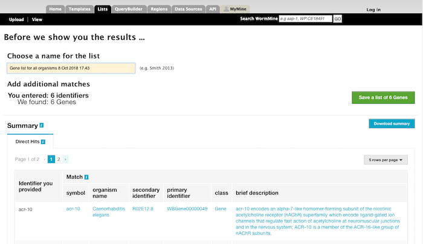
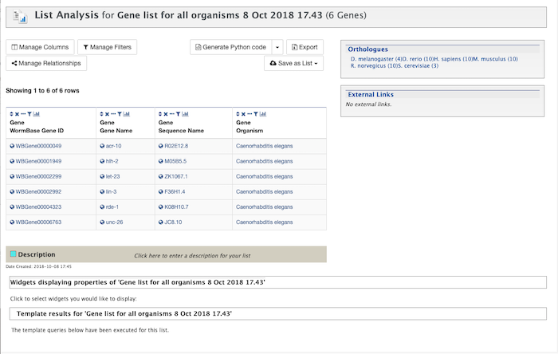

Creating lists
To create a list, click on the Lists tab on the main page. This will bring the first page of the List creation wizard in WormMine.

You can select the list type (from all the type of items in the database) and organism (majority of items are C. elegans). Enter or paste the identifiers (alternatively a file can be uploaded) separated by comma, space, tab or new line and click on Create List.

All the identifiers entered will be matched against the database and the second page of the wizard will be displayed.

A name can then be entered, and the list created by clicking on Save a list of # items. There's a summary of the
matches found and you can download a CSV file with it. By saving the list, the final page of the wizard is shown.

This page has similar functionalities as the query result table, and the final list can be manipulated, changed and other information can be entered, like a description for documentation, among other things. If you are logged in, the list will show in your My Mine lists where it can be retrivied anytime.